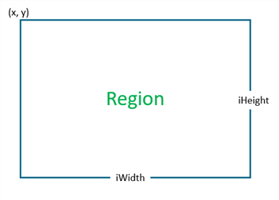
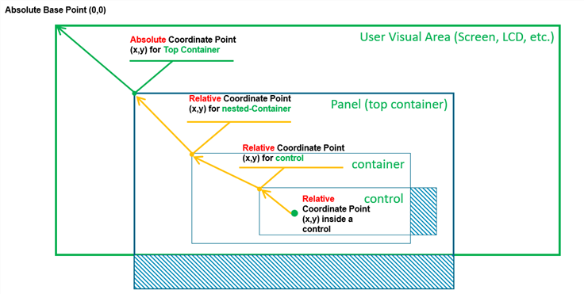
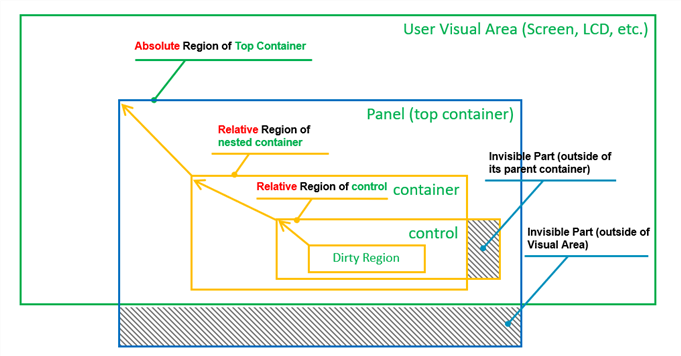
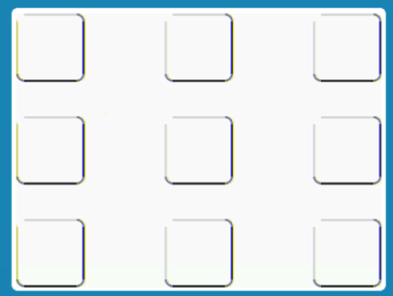
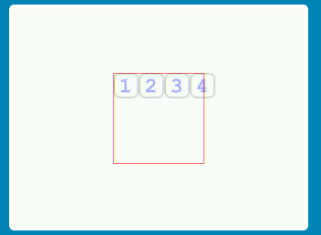
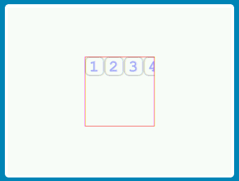
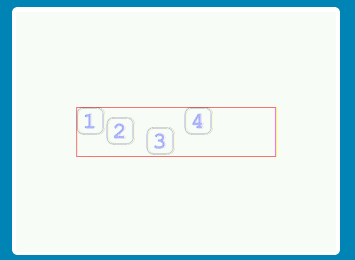
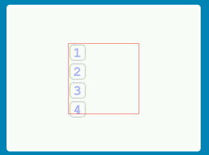
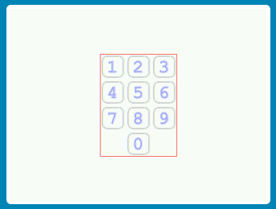
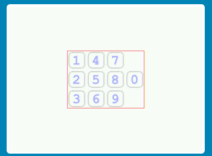

|
Arm-2D
2D Image Processing Library for Cortex-M Processors
|


|
|
Arm-2D
2D Image Processing Library for Cortex-M Processors
|
|
When we use arm-2d for 2D image processing, almost all APIs need to specify the target Region. Especially for those users who need to use Arm-2D for simple UI design, how to place graphic elements and how to deal with the layout of the screen is essentially a problem of Region calculation. In order to free users from manual Region calculations, Arm-2D refers to the popular GUI layout methodology and provides a series of simple and easy-to-use Helpers in the form of macro templates, called Layout Assistant.
This article will introduce the use of Arm-2D Layout Assistant in detail through examples.
We assume that you are getting into Arm-2D for the first time, so in order for you to understand the following content, we need to introduce some basic concepts first, such as Region, canvas, container and so on.
Region is a rectangular area described by the Location (the coordinates of the upper left corner) and the Size information.
**Figure 1-1 Region with Location and Size **

The coordinate of the Region is defined by the vertices at the upper left corner of the bit rectangle. Its data structure is as follows:
Different from the general Cartesian coordinate system, in graphics, the Y-axis is usually mirrored in the opposite direction, which means that the lower the Y coordinate is, the larger the Y coordinate is. In the Boxing model that will be introduced later, we will understand that the coordinates of a Region can be negative, representing the position of the current Region relative to the starting point of its parent Region.
Figure 1-2 When Location has a negative coordinates.

As shown in Figure 1-2, when the x and y coordinates of a Region are both negative, it actually has a considerable area outside (upper left corner) of its parent Region. When we try to find the intersection of the current Region and its parent Region, we will find that only part of the region is valid.
The size information of the Region is described by the Height and Width together. The data structure is defined as follows:
Although a signed type int16_t is used to describe the width and height, negative numbers are meaningless and should be avoided.
The so-called Boxing Model describes the affiliation between Regions, which is often used to describe the relationship between containers and visual elements.
In a GUI stack, the Boxing Model usually talks about more complex stuff, such as the border's width, the margin inside a container border, the padding of / distance between the elements inside a container etc. Arm-2D does NOT cares about these details but only describes the simple relationship between a container and the elements inside.
In Arm-2d, we consider panels or windows as containers, and the Locations of the panels and the windows are their coordinates in the display buffer. We call this kind of location information that directly describes the coordinates in a display buffer as an Absolute Location. In Figure 1-3, the panel (top container) coordinates are absolute coordinates.
The coordinates of the elements inside a container are described as coordinates relative to the upper left corner of the parent container. We call this kind of Locations the Relative Locations. In addition to that, since the container is only a special element, container nesting becomes possible. In Figure 1-3, the two innermost Regions have Relative Locations.
Figure 1-3 A Typical Example of Absolute Locations and Relative Locations

If a Region has absolute Location, it is an Absolute Region; similarly, if a Region has relative Location, it is a Relative Region.
Figure 1-4 A Typical Example of Absolute Regions and Relative Regions

When we use these relative and absolute information to perform visual area calculations, it is easy to exclude those areas that are actually invisible to the user from various graphic operations, thereby improving the overall 2D processing performance (as shown in Figure 1-4 ).
The essence of the canvas is Region. To draw on a Tile, we need to use arm_2d_canvas() to create a canvas first. The syntax is as follows:
Here arm_2d_canvas() takes two parameters, i.e. the address of the target Tile and the name of the canvas. arm_2d_canvas() will create a canvas with the specified name for the specified Tile.
NOTE: Canvas cannot be used outside of curly braces.
For example:
This is a typical scene drawing function, where ptTile points to the target Tile representing the screen. In order to draw on the screen, we need to create a canvas for it, namely __top_canvas in the example.
Region is just a descriptive information. How to interpret the meaning of Region depends entirely on which API we use. Similarly, when we use the canvas for layout, it often happens that the actual graphic elements exceed the scope of the canvas. At this point, whether to clip the excess part depends on the specific situation. But if we clearly want the part beyond the canvas to be clipped, then we need to introduce the concept of Container.
The essence of the container is a Child-Tile, and any content that exceeds the rectangular area of the child tile will be clipped. Via the macro arm_2d_container() we can easily create a container. The syntax is as follows:
Here arm_2d_container() takes three parameters, i.e. the address of the target Tile, the name of the new Child Tile, and the address of the target region. arm_2d_container() will generate a new child tile with the name specified by the user according to the given target Region, and generate the corresponding canvas with __canvas as the suffix. For example, if we specify the name of the child tile as my_container, then the corresponding canvas is called my_container_canvas.
NOTE:
NULL. In this case, the child tile essentially coincides with the target Tile in size.The above example comes from the control template. In general GUI design, the part beyond the rectangular area of the control needs to be clipped, that's why we create a container for a user control.
In UI design, alignment is the most basic layout method. There are 9 alignments as shown in Figure 2-1:
Figure 2-1 The 9 alignments

Arm-2D provides macros with a unified style for these 9 alignments, as shown in Table 2-1:
Table 2-1 Macros and Regions for the 9 alignments
| Left | Central | Right | |
|---|---|---|---|
| Top | arm_2d_align_top_left(): __top_left_region | arm_2d_align_top_centre(): __top_centre_region | arm_2d_align_top_right(): __top_right_region |
| Middle | arm_2d_align_mid_left(): __mid_left_region | arm_2d_align_centre(): __centre_region | arm_2d_align_mid_right(): __mid_right_region |
| Bottom | arm_2d_align_bottom_left(): __bottom_left_region | arm_2d_align_bottom_centre(): __bottom_centre_region | arm_2d_align_bottom_right(): __bottom_right_region |
The syntax of these macros is as follows:
Syntax 1:
Here the macro helper arm_2d_align_<alignment> takes three arguments, i.e. the target region object, the width and height of the target area.
NOTE: Please pass the arm_2d_region_t object to the macro helper as the target region but NOT the address of an arm_2d_region_t object.
Syntax 2:
Here the macro helper arm_2d_align_<alignment> takes two arguments, i.e. the target region object and the size of the target area.
NOTE:
Based on the syntax above, the code corresponding to Figure 2-1 is as follows:
When designing a graphical interface, in addition to the alignment described above, we usually want to arrage a stream of graphic elements to a specified area in sequence under certain rules. This process is often referred to as layout. Commonly used layout rules are:
When doing layout, users only need to enumerate graphic elements, specify their sizes, and optionally specify the space (a.ka. Padding) among elements. During this process, the user does not need to manually calculate the coordinates of each element, which is very convenient.
The Line Stream Layout is a common layout method, which places elements in a specified area one by one.
Note: If any elements exceed the given area, the Line Stream Layout will not wrap when placing elements.
Horizontal placement is one of the common ways of Line Stream Layout. Its syntax is as follows:
Here, arm_2d_layout() takes an arm_2d_region_t object as the target region and __item_line_horizontal() must be used inside the arm_2d_layout() structure. You can list as many __item_line_horizontal() segments as you want. __item_line_horizontal() takes two mandatory parameters, i.e. width and height or one arm_2d_size_t object as the size of the element.
NOTE:
arm_2d_layout() as the target region but NOT the address of an arm_2d_region_t object.__item_line_horizontal() as the size of the target element but NOT the address of an arm_2d_size_t object.Figure 3-1 shows an simple example of the Line Stream Layout, which places four buttons in a line wihout and padding. In the source code, we mark the target area in red, so you can see that the 4th button is actually out of the region.
Figure 3-1 A Horizontal Line Stream Layout Example

The example code is shown below:
If we want to clip the part out of the target area, as shown in Figure 3-2, we should use arm_2d_container().
Figure 3-2 Using Container for Region Clipping

The corresponding code is as follows:
In addition to the size information, __item_line_horizontal() can optionally accept 4 additional padding parameters for the left, right, top and bottom. The syntax is shown below:
Figure 3-3 shows the visual effects of four elements with different padding using the Horizontal Line Stream Layout.
Figure 3-3 Different Paddings among Items

The corresonponding code is as follows:
The Vertical Line Stream Layout is similar to the Horizontal Line Stream Layout described above. The only difference is the layout direction. The syntax is shown below:
NOTE:
arm_2d_layout() as the target region but NOT the address of an arm_2d_region_t object.__item_line_vertical() as the size of the target element but NOT the address of an arm_2d_size_t object.Figure 3-4 shows the visual effects of four elements with the same padding using the Vertical Line Stream Layout.
Figure 3-4 A Vertical Line Stream Layout Example with Padding

The example code is shown below:
Similar to the Line Stream Layout, the Stream Layout is a commonly used layout method, which places elements in a line and wraps before hitting the bundary of the target area.
Horizontal placement is one of the common ways of the Stream Layout. Its syntax is as follows:
NOTE:
arm_2d_layout() as the target region but NOT the address of an arm_2d_region_t object.__item_horizontal() as the size of the target element but NOT the address of an arm_2d_size_t object.Figure 3-5 shows a digits panel implemented with the Horizontal Stream Layout. Padding (2,2,2,2) is added to each element.
Figure 3-5 A Horizontal Stream Layout Example: Digits Panel

The corresponding source code is as follows:
The Vertical Stream Layout is similar to the Horizontal Stream Layout described above. The only difference is the layout direction. The syntax is shown below:
NOTE:
arm_2d_layout() as the target region but NOT the address of an arm_2d_region_t object.__item_vertical() as the size of the target element but NOT the address of an arm_2d_size_t object.Figure 3-6 shows a digits panel similar to the one shown in Figure 3-5. It is implemented with the Vertical Stream Layout and paddings are added.
Figure 3-6 A Vertical Stream Layout Example: Digits Panel

The example code is shown below: